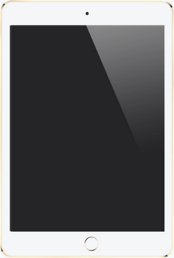

iPad
O iPad é uma linha de computadores tablet projetados, desenvolvidos e comercializados pela Apple Inc. , que executa o sistema operacional móvel iOS. O primeiro iPad foi lançado em 3 de abril de 2010; os modelos mais recentes do iPad são o iPad (2018) , lançado em 27 de março de 2018; o mini-iPad de quinta geração , lançado em 18 de março de 2019; a terceira geração do iPad Air , lançada em 18 de março de 2019; e o iPad Pro de 11 polegadas (330 mm) e de terceira geração de 12,9 polegadas (330 mm), lançado em 7 de novembro de 2018.
Em maio de 2017, a Apple vendeu mais de 360 milhões de iPads, embora as vendas tenham atingido o pico em 2013. É o tablet mais popular em vendas a partir do segundo trimestre de 2018.
A interface do usuário é construída em torno da tela multitoque do dispositivo, incluindo um teclado virtual . Todos os iPads podem se conectar via Wi-Fi ; alguns modelos também possuem conectividade celular . Os iPads podem gravar vídeos , tirar fotos , reproduzir músicas e realizar funções da Internet, como navegação na web e envio por e-mail. Outras funções - jogos , referência , navegação por GPS , redes sociais , etc. - podem ser ativadas ao baixar e instalar aplicativos. Desde março de 2016 , a App Store tem mais de milhões de aplicativos para o iPad da Apple e de terceiros.
Houve oito versões do iPad. A primeira geração estabeleceu precedentes de design, alguns dos quais persistiram em todos os modelos. O iPad de 2ª geração (iPad 2) introduziu um novo design mais fino, um processador Apple A5 dual-core e câmeras viradas para a frente e voltadas para trás voltadas para chamadas de vídeo FaceTime . A terceira geração adicionou um Retina Display , o novo processador Apple A5X com um processador gráfico quad-core , uma câmera de 5 megapixels , gravação de vídeo HD 1080p , ditado por voz e 4G ( LTE ). A quarta geração adicionou o processador Apple A6X e substituiu o conector de 30 pinos por um conector Lightning totalmente digital. O iPad Air adicionou o processador Apple A7 eo coprocessador de movimento Apple M7 e reduziu a espessura pela primeira vez desde o iPad 2. O iPad Air 2 adicionou o processador Apple A8X , o coprocessador de movimento Apple M8 , uma câmera de 8 megapixels, e o sensor de impressão digital Touch ID ; e reduziu ainda mais a espessura. O iPad lançado em 2017 adicionou o processador Apple A9 , enquanto sacrificava algumas das melhorias introduzidas pelo iPad Air 2 em troca de um preço de lançamento mais baixo.
Houve cinco versões do iPad Mini , todas com tela de 7,9 polegadas (20 cm). A primeira geração tem especificações internas semelhantes ao iPad 2, mas usa o conector Lightning . O iPad Mini 2 adicionou o Retina Display , o processador Apple A7 e o coprocessador de movimento Apple M7 , combinando de perto com as especificações internas do iPad Air. O iPad Mini 3 adicionou o sensor de impressão digital Touch ID . O iPad Mini 4 apresenta o Apple A8 e o coprocessador de movimento Apple M8 . A quinta geração apresenta o Apple A12 SoC.
Houve três gerações do iPad Pro . A primeira geração veio com tamanhos de tela de 9,7 "e 12,9", enquanto a segunda veio com tamanhos de 10,5 "e 12,9" e a terceira com tamanhos de 11 "e 12,9". Os iPad Pros possuem recursos exclusivos, como o Smart Connector, exclusivo desta série de iPads.
|  9.7" iPad Pro in Gold |
Desenvolvedor Apple Inc. Fabricante
Tipo Computador tablet
- Foxconn ( no contrato )
- Pegatron
- 1ª geração
- 2ª geração
- 3ª geração
- 4ª geração e mini 1ª geração
- Ar
- Mini 2
- Ar 2 e Mini 3
- Mini 4
- Pro 1g de 12,9 polegadas
- Pro 9,7 polegadas
- 5ª geração
- Pro de 12,9 polegadas 2G e 10,5 polegadas
- 6ª geração
iPad | Lançado com | Data de lançamento | SO suportado final | Suporte terminado | Suporte a vida útil | Preço de lançamento |
iPad | iOS 3.2 | 3 de abril de 2010 | iOS 5.1.1 | 18 de setembro de 2012 | 2 anos, 5 meses | |
iPad 2 | iOS 4.3 | 11 de março de 2011 | iOS 9.3.5 | 12 de setembro de 2016 | 5 anos, 6 meses | |
| iPad (3ª geração) | iOS 5.1 | 16 de março de 2012 | iOS 9.3.5 | 12 de setembro de 2016 | 4 anos, 5 meses | |
| mini iPad | iOS 6.0.1 | 2 de novembro de 2012 | iOS 9.3.5 | 12 de setembro de 2016 | 3 anos, 10 meses | |
| iPad (4ª geração) | iOS 6.0 | 12 de novembro de 2012 | iOS 10.3.3 | 18 de setembro de 2017 | 4 anos, 10 meses | |
| iPad Air | iOS 7.0.3 | 1° de novembro de 2013 | mais recente iOS | (Atual) | > 5 anos, 5 meses | |
| iPad mini 2 (visor Retina) | iOS 7.0.3 | 12 de novembro de 2013 | mais recente iOS | (Atual) | > 5 anos, 5 meses | |
| iPad Air 2 | iOS 8.1 | 22 de outubro de 2014 | mais recente iOS | (Atual) | > 4 anos, 5 meses | |
| iPad mini 3 | iOS 8.1 | 22 de outubro de 2014 | mais recente iOS | (Atual) | > 4 anos, 5 meses | |
| iPad mini 4 | iOS 9.0 | 9 de setembro de 2015 | mais recente iOS | (Atual) | > 3 anos, 7 meses | |
| iPad Pro (1º, 12,9 '') | iOS 9.1 | 11 de novembro de 2015 | mais recente iOS | (Atual) | > 3 anos, 5 meses | |
| iPad Pro (1ª, 9,7 '') | iOS 9.3 | 31 de março de 2016 | mais recente iOS | (Atual) | > 3 anos | |
| iPad (2017) | iOS 10.2.1 | 24 de março de 2017 | mais recente iOS | (Atual) | > 2 anos | |
| iPad Pro (2º, 12,9 '') | iOS 10.3.2 | 13 de junho de 2017 | mais recente iOS | (Atual) | > 1 ano, 10 meses | |
| iPad Pro (2ª, 10,5 '') | iOS 10.3.2 | 13 de junho de 2017 | mais recente iOS | (Atual) | > 1 ano, 10 meses | |
| iPad (2018) | iOS 11.2.6 | 27 de março de 2018 | mais recente iOS | (Atual) | > 1 ano | |
| iPad Pro (3ª, 11 ") | iOS 12 | 30 de outubro de 2018 | mais recente iOS | (Atual) | > 5 meses | |
| iPad Pro (3º, 12.9 ") | iOS 12 | 30 de outubro de 2018 | mais recente iOS | (Atual) | > 5 meses | |
| Ar do iPad (2019) | iOS 12 | 18 de março de 2019 | mais recente iOS | (Atual) | > 1 mês | |
| iPad mini (2019) | iOS 12 | 18 de março de 2019 | mais recente iOS | (Atual) | > 1 mês | |
| Lenda: Descontinuado e sem suporte Descontinuado, mas ainda suportado Atual ou ainda vendido * Contrato de 24 meses requerido | ||||||
O co-fundador da Apple, Steve Jobs,
disse em um discurso de 1983 que a estratégia da empresa era simples:
"O que queremos fazer é colocar um computador incrivelmente grande em um
livro que você possa levar consigo e aprender como use em 20 minutos
... e nós realmente queremos fazer isso com um link de rádio para que
você não tenha que se conectar a nada e esteja em comunicação com todos
esses bancos de dados maiores e outros computadores ".
O primeiro computador tablet da Apple foi o Newton MessagePad 100 , lançado em 1993, impulsionado por um núcleo de processador ARM6 desenvolvido pela ARM , uma subsidiária da Acorn Computers de 1990 na qual a Apple investiu. A Apple também desenvolveu um protótipo do tablet baseado em PowerBook Duo , o PenLite , mas decidiu não vendê-lo para evitar prejudicar as vendas do MessagePad. A Apple lançou vários outros PDAs baseados em Newton; o último, o MessagePad 2100 , foi descontinuado em 1998.
A Apple voltou a entrar nos mercados de computação móvel em 2007 com o iPhone . Menor do que o iPad, mas com uma câmera e um telefone celular, foi pioneira na interface sensível ao toque multitoque sensível ao toque do sistema operacional iOS da Apple. No final de 2009, o lançamento do iPad havia sido inventado há vários anos. Tal especulação falou principalmente sobre "tablet da Apple"; nomes específicos incluíam o iTablet e o iSlate. O iPad foi anunciado em 27 de janeiro de 2010, por Steve Jobs em uma coletiva de imprensa da Apple no Yerba Buena Center for the Arts, em San Francisco.
Jobs disse mais tarde que a Apple começou a desenvolver o iPad antes do iPhone. Jonathan Ive,
em 1991, criou um design industrial para um tablet baseado em stylus, o
Macintosh Folio, como seu primeiro projeto para a Apple;
em 2004, seu estúdio na empresa estava participando do desenvolvimento
de um protótipo de tablet grande, que ele descreveu como "muito bruto,
envolvendo projetores".
Eu afirmei que depois de procurar produzir o tablet primeiro, ele
chegou a concordar com Jobs que o telefone era mais importante, já que as inovações do tablet também funcionariam nele. O codinome interno do iPad era K48, que foi revelado no processo
judicial envolvendo o vazamento de informações do iPad antes do
lançamento.
A Apple começou a aceitar pré-encomendas para o iPad da primeira geração em 12 de março de 2010. A única grande mudança no dispositivo entre o anúncio e a
disponibilidade para a pré-encomenda foi a mudança do comportamento do
botão lateral para executar som muting ou bloqueio de rotação da tela
(selecionável pelo usuário). A versão Wi-Fi do iPad começou a ser vendida nos Estados Unidos em 3 de abril de 2010. A versão Wi-Fi + 3G foi lançada em 30 de abril. O serviço 3G nos Estados Unidos é fornecido pela AT & T
e foi inicialmente vendido com duas opções pré-pagas de plano de dados
sem contrato: uma para dados ilimitados e outra para 250 MB por mês pela
metade do preço. Em 2 de junho de 2010, a AT & T anunciou que, a partir de 7 de
junho, o plano ilimitado seria substituído por novos clientes com um
plano de 2 GB a um custo ligeiramente inferior; os clientes existentes teriam a opção de manter o plano ilimitado. Os planos são ativados no próprio iPad e podem ser cancelados a qualquer momento.
Inicialmente, o iPad só estava disponível para encomenda na Apple Store , mas desde então tornou-se disponível para compra através de varejistas, incluindo Amazon, Walmart e operadoras de rede. O iPad foi lançado em países como Austrália, Canadá, França, Alemanha, Japão e Reino Unido em 28 de maio. As encomendas online desses países começaram em 10 de maio. A Apple lançou o iPad em Hong Kong , Irlanda, México, Nova Zelândia e Cingapura em 23 de julho de 2010. Israel proibiu brevemente a importação do iPad devido a preocupações de que seu Wi-Fi possa interferir em outros dispositivos. Em 17 de setembro de 2010, o iPad foi oficialmente lançado na China.
300.000 iPads foram vendidos no primeiro dia de disponibilidade. Em 3 de maio de 2010, a Apple vendeu um milhão de iPads; isso foi na metade do tempo que a Apple levou para vender o mesmo número de iPhones de primeira geração. Depois de passar o um marca de milhões continuaram a vender rapidamente atingindo 3 milhões de vendas após 80 dias. Durante a conferência telefônica de 18 de outubro de 2010, Steve Jobs
anunciou que a Apple havia vendido mais iPads do que Macs para o
trimestre fiscal. No total, a Apple vendeu mais de 15 milhões de iPads de primeira geração antes do lançamento do iPad 2 - vendendo mais do que todos os outros tablet PCs combinados desde o lançamento do iPad, e atingindo 75% das vendas de tablets no final de 2010.
Jobs revelou o iPad 2 em uma conferência de imprensa em 2 de março de 2011. Aproximadamente 33% mais fino que seu antecessor e 15% mais leve, o iPad 2 tem um processador melhor, um Apple A5 dual core
que a Apple diz ser duas vezes mais rápido que seu antecessor para
operações de CPU e até nove vezes mais rápido para operações de GPU. O iPad 2 inclui câmeras frontais e traseiras que suportam o aplicativo de videofone FaceTime , assim como um giroscópio de três eixos. Manteve a duração da bateria de 10 horas do original e tinha um esquema de preços similar.
O sucessor do iPad 2 foi revelado em 7 de março de 2012 pelo CEO da Apple, Tim Cook, no Yerba Buena Center for the Arts. O novo iPad continha um novo processador dual core A5X com gráficos quad-core e um Retina Display com uma resolução de 2.048 por 1.536 pixels, mais de 50% mais pixels do que um padrão 1.920 por 1.080 tela de TV de alta definição . Uma breve controvérsia surgiu quando foi revelado que o LTE anunciado não funcionava em alguns países.
Em 23 de outubro de 2012, a Apple anunciou o iPad de quarta geração , que começou a ser lançado em 2 de novembro de 2012. O novo hardware inclui um processador A6X , câmera HD FaceTime, compatibilidade LTE aprimorada e o conector Lightning totalmente digital. Está disponível nos mesmos incrementos de armazenamento e estrutura de preços da terceira geração. Após o anúncio do iPad de quarta geração, a geração anterior foi descontinuada.
Juntamente com o lançamento do hardware de quarta geração, a Apple anunciou o iPad Mini . Com uma tela de 7,9 polegadas, destina-se ao setor emergente de tablets menores , como o Kindle Fire e o Nexus 7 . O hardware do novo iPad Mini é semelhante ao iPad 2 , com uma tela de resolução de 1.024 por 7,68 pixels e um processador dual core A5 , mas é 53% mais leve e 7,2 mm de espessura. Foi lançado em 2 de novembro de 2012, com capacidades de 16 GB, 32 GB e 64 GB e versões Wi-Fi ou Wi-Fi + Cellular.
Em 22 de outubro de 2013, a Apple lançou a quinta geração do iPad, chamada iPad Air , e a segunda geração do iPad Mini, chamada iPad Mini 2, que vem com um Retina Display .
O iPad Air foi colocado à venda em 1 de novembro de 2013, a partir de
US $ 499, enquanto o iPad Mini 2 foi lançado em 12 de novembro de 2013, a
partir de US $ 399.
No primeiro trimestre de 2014, a Apple informou que havia vendido 25
milhões de iPads, um recorde trimestral de todos os tempos, comparado a
22,9 milhões no mesmo trimestre do ano anterior.
Em outubro de 2014, a Apple lançou o iPad Air 2 e o iPad Mini 3 . O iPad Air 2 é o primeiro dispositivo iOS a apresentar um CPU triplo e 2 GB de RAM. Além de ser mais fino e mais rápido que o seu antecessor, o iPad Air, possui Touch ID e está disponível com uma opção de cor dourada. O iPad Mini 3 é semelhante ao iPad Mini 2 em design e hardware, mas também inclui Touch ID e disponível na cor dourada.
Em setembro de 2015, foi anunciado o iPad Pro , que incluiu uma tela de 12,9 polegadas, e uma versão de 9,7 polegadas foi anunciada em março de 2016, com a adição da opção de 256 GB para ambos os modelos Pro iPad.
Em 21 de março de 2017, um novo iPad foi anunciado. O hardware inclui um processador A9 e é projetado para ser uma versão orçamentária do iPad.
Em junho de 2017, anunciou-se que o hardware de segunda geração do iPad Pro teria telas de 12,9 e 10,5 polegadas.
Em 28 de março de 2018, foi anunciado o novo modelo 2018 de 9,7 polegadas do iPad (6ª geração). O novo modelo usa o processador A10 Fusion e suporta totalmente o Apple Pencil , substituindo o modelo 2017.
Em 30 de outubro de 2018, o iPad Pro de terceira geração foi anunciado, e foi a primeira geração a suportar 1 TB de armazenamento.
Em 18 de março de 2019, a Apple anunciou um novo iPad Air de 10,5 polegadas e um novo iPad mini de 5ª geração , ambos com processadores A12 Bionic.
Hardware
Tela e entrada
A tela sensível ao toque do iPad (primeira geração) é uma tela de cristal líquido de 197 × 148 mm (1.024 x 768 pixels), diagonal (246.4 mm), com vidro com impressão digital e resistente a arranhões. Steve Jobs disse que uma tela de 7 polegadas seria "pequena demais para expressar o software" e que 10 polegadas é o mínimo para uma tela de tablet. Como o iPhone, o iPad é projetado para ser controlado por dedos nus; luvas e pontas normais e não condutoras não funcionam, embora existam luvas especiais e pontas capacitivas projetadas para esse uso.
O monitor responde a outros sensores: um sensor de luz ambiente para ajustar o brilho da tela e um acelerômetro de 3 eixos para detectar a orientação do iPad e alternar entre os modos retrato e paisagem . Ao contrário dos aplicativos incorporados do iPhone e iPod Touch, que funcionam em três orientações (retrato, paisagem esquerda e paisagem direita), os aplicativos integrados do iPad suportam rotação de tela em todas as quatro orientações, incluindo de cabeça para baixo. Consequentemente, o dispositivo não tem orientação "nativa" intrínseca; somente a posição relativa do botão home muda.
Existem quatro interruptores físicos no iPad, incluindo um botão home perto do monitor que retorna o usuário para o menu principal e três interruptores físicos de plástico nas laterais: wake / sleep e volume up / down , além de um switch controlado por software função mudou com as atualizações de software. Originalmente, o switch bloqueava a tela para sua orientação atual, mas o iOS 4.2 o alterou para um mudo, com o bloqueio de rotação agora disponível em um menu na tela. Na atualização do iOS 4.3, lançada com o iPad 2, foi adicionada uma configuração para permitir que o usuário especifique se a chave lateral foi usada para bloqueio de rotação ou mudo.
A primeira geração do iPad não tinha câmera; o iPad 2 tem uma câmera VGA frontal e uma câmera de 720p voltada para trás, ambas capazes de imagens estáticas (mas são tiradas apenas com uma qualidade baixa de 0,3 megapixels) e vídeo de 30 fps . A câmera traseira possui um zoom digital de 5x somente para imagens estáticas. Ambos tiram foto e vídeo em uma proporção de tela inteira 4: 3 , ao contrário do iPhone 4 , que tem um formato widescreen de 16: 9 . Ao contrário do iPhone, o iPad não suporta o toque para o foco, mas permite que um toque defina a exposição automática. As câmeras permitem o envio de mensagens de vídeo do FaceTime com o iPhone 4, o iPod Touch de quarta geração e os Macs Snow Leopard , Lion e Mountain Lion.
Áudio e saída
O iPad possui dois alto-falantes internos que reproduzem o áudio do canal esquerdo e direito localizado na parte inferior direita da unidade. No iPad original, os alto-falantes empurram o som através de dois pequenos canais selados que levam às três portas de áudio esculpidas no dispositivo, enquanto o iPad 2 tem seus alto-falantes atrás de uma única grade. Um interruptor de volume está no lado direito da unidade. Um conector de saída de áudio TRRS de 3,5 mm no canto superior esquerdo do dispositivo fornece som estéreo para fones de ouvido com ou sem microfones e / ou controles de volume. O iPad também contém um microfone que pode ser usado para gravação de voz.
A interface Bluetooth 2.1 + EDR integrada permite que fones de ouvido sem fio e teclados sejam usados com o iPad. No entanto, o iOS não suporta atualmente a transferência de arquivos via Bluetooth. O iPad também possui saída de vídeo VGA de 1.024 × 768 para aplicações limitadas, captura de tela, conectando um monitor externo ou televisão através de um adaptador de acessório.
Bateria
O iPad usa uma bateria interna de polímero de íon de lítio recarregável (LiPo). As baterias são fabricadas em Taiwan pela Simplo Technology (60%) e pela Dynapack International Technology. O iPad foi projetado para ser carregado com uma alta corrente de 2 amperes usando o adaptador de energia USB de 10 W incluído e cabo USB com um conector USB em uma extremidade e um conector de dock de 30 pinos na outra extremidade. Embora possa ser carregado por uma porta USB padrão de um computador, eles são limitados a 500 miliamperes (0,5 amps). Como resultado, se o iPad estiver sendo executado enquanto estiver sendo alimentado por uma porta USB normal, ele poderá carregar muito lentamente ou até mesmo não funcionar. As portas USB de alta potência encontradas nos computadores e acessórios mais recentes da Apple oferecem recursos completos de carregamento.
A Apple alega que a bateria para ambas as gerações do iPad pode fornecer até 10 horas de vídeo, 140 horas de reprodução de áudio ou um mês em standby. Como qualquer tecnologia de bateria recarregável, a bateria do iPad perde a capacidade ao longo do tempo, mas não foi projetada para ser substituível pelo usuário. Em um programa semelhante ao programa de substituição de bateria do iPod e do iPhone original, a Apple substituirá um iPad que não possui carga elétrica com um iPad recondicionado por uma taxa de US $ 99, mais US $ 6,95 de envio. Como uma unidade diferente é fornecida, os dados do usuário não são preservados. A unidade recondicionada terá um novo caso. A garantia da unidade recondicionada pode variar entre jurisdições.
As empresas independentes também fornecem um serviço de substituição de baterias, devolvendo a unidade original com nova bateria, mas com estojo original. Alternativamente, é possível que um usuário tecnicamente competente compre e instale uma nova bateria. A tarefa não requer solda, mas é tecnicamente desafiadora.
Armazenamento
O iPad foi lançado com três opções de capacidade para armazenamento: 16, 32 ou 64 GB de memória flash interna. Em 29 de janeiro de 2013, a Apple anunciou um modelo de 128 GB da quarta geração do iPad , que foi lançado em 5 de fevereiro. Todos os dados são armazenados na memória flash interna, sem a opção de expandir o armazenamento. A Apple vende um "kit de conexão de câmera" com um leitor de cartão SD , mas ele só pode ser usado para transferir fotos e vídeos. Em 21 de março de 2016, a Apple anunciou um modelo de 256 GB do iPad Pro , que foi lançado em 31 de março. Em 2017, a Apple lançou um iPad Pro de 10,5 polegadas e um iPad Pro de 12,9 polegadas com 512 GB. opção, o primeiro de seu tipo em um dispositivo iOS. Em 2018, a Apple lançou um iPad Pro de 11 polegadas e 12,9 polegadas, ambos com um Opção de TB.
O Apple iOS, em combinação com seu hardware específico, usa criptografia quando ativa o "Apagar todo o conteúdo e configurações", destruindo todas as teclas em 'armazenamento que pode ser feito'. Isso torna todos os dados do usuário no dispositivo criptograficamente inacessíveis.
Conectividade celular
Os modelos do iPad vêm em duas variantes básicas: Wi-Fi apenas e Wi-Fi com suporte celular. No entanto, as variantes celulares não suportam chamadas de voz com comutação de circuitos e textos, apenas conectividade de dados. O lado do iPad Wi-Fi + 3G tinha um slot micro-SIM (não mini-SIM ). O iPad 3G pode ser usado com qualquer operadora GSM compatível, ao contrário do iPhone, que geralmente é vendido 'bloqueado' para operadoras específicas . Nas primeiras gerações do iPad nos EUA, o acesso à rede de dados através da rede da T-Mobile limitou-se a velocidades celulares EDGE mais lentas porque a rede 3G da T-Mobile na época usava freqüências diferentes.
A segunda geração do iPad introduziu um terceiro nível de modelos com suporte a CDMA para a Verizon Wireless nos Estados Unidos, disponível separadamente da versão compatível com AT & T.
O iPad até a 4ª geração usa um Micro-SIM, enquanto o iPad Mini da primeira geração usa um nano-SIM como apresentado no iPhone 5. O iPad mini está disponível com duas bandas de freqüência diferentes em todo o mundo. Ambas as tecnologias suportadas como as UMTS GSM e UMTS de banda quádrupla, são também suportadas pelas bandas LTE 4 e 17 (principalmente os planos para a rede US AT & T), enquanto uma outra instância de suporte para bandasLTE 1, 3, 5, 13, 25 e CDMA EV-DO Rev. A e Rev. B.
O iPad de 5ª geração e o iPad mini de segunda geração têm suporte para muitas bandas LTE adicionais em todo o mundo. Os modelos celulares iPad Air e Mini com tela possuem duas faixas cada, todos suportando nano-SIMs, quad-band GSM, UMTS penta-band e CDMA dual-band EV-DO Rev. A e B. Além disso, uma variante de cada iPad também suporta as bandas LTE 1, 2, 3, 4, 5, 7, 8, 13, 17, 18, 19, 20, 25 e 26, enquanto uma variante suporta como bandas LTE 1, 2, 3, 5, 7, 8, 18, 19, 20 eTD-LTEbandas 38, 39 and 40. A capacidade da Apple de lidar com muitas bandas diferentes em um dispositivo único, pela primeira vez, uma única versão do iPad que suporta todas as bandas e tecnologias implantadas por todos os principais provedores sem fio da América do Norte hora da introdução do dispositivo. Além disso, com um T-Mobile EUA vendendo o iPad Air e Mini com tela Retina, estes modelos tornaram-se os primeiros iPads que foram disponibilizados para comprar diretamente de todas as quatro operadoras de telefonia móvel dos EUA (e, como indicado anteriormente, com todas as operadoras americanas vendendo agora) a mesma variante de hardware do dispositivo).
Acessórios
A Apple oferece vários acessórios para o iPad, uma maioria dos quais são adaptadores para oconectorproprietário de 30 pinos , uma porta do iPad além da entrada do fone de ouvido. Uma doca mantém o IPAD em pé em um ângulo e é um conector de áudio e uma porta de saída de linha de áudio. Cada geração de iPad requer um dock correspondente. Um dock que incluía um toque físico era suportado apenas para o iPad original, mas todas as gerações são compatíveis com o Bluetooth que também funcionam comMacs e PCs. O iPad pode ser carregado por um adaptador de energia autônomo ("carregador de parede") também usado para iPods e iPhones, e um carregador de 10 W está incluído no iPad.
A Apple vende um kit de conexão de câmera em dois adaptadores para o conector da estação de acoplamento, um para otipo A USB e Outropara oleitor de cartão SD . O driver pode ser usado para transferir fotos e vídeos e para conectar uma placa deáudioUSB ou oteclado MIDI. Um terceiro vende um padrão que inclui USB, SD eMicroSDem uma unidade única. Um adaptador paraconectores VGAiPad que funciona com monitores e projetores externos. Outro adaptador espelha a tela paraHDMIDispositivos básicos em 1080p e funciona com todos os aplicativos e rotações. Ao contrário de outros adaptadores, permite que o iPad carregue através do conector de doc. Enquanto o HDMI foi lançado e anunciado para umsegunda geração do iPad , ele também funciona com o iPad de primeira geração, o iPhone 4 o iPod Touch de quarta geração.
Smart Covers são protectores de tela que fixam magneticamente e se alinham à face do iPad 2, 3 ou 4. Uma capa de três dobras permite a transmissão de um suporte, que é também um suporte unido pelos mesmos. Capas de iPad originais podem ser compradas por um bolso preto que inclui uma capa dobrável similar, uma Cobertura Inteligente é um produto mais minimalista, pode ser removida e protege apenas a tela. Capas inteligentes têm um fundo demicrofibraque limpa a frente do iPad (que é quando a tampa é removida). Existem cinco núcleos diferentes de poliuretano e couro, sendo o couro mais caro. Capas inteligentes não são compatíveis com o iPad original. Em junho de 2012, a Apple começou a vender o Smart Case - um case com uma função combinada de uma capa inteligente e um case de proteção que é compatível com os dispositivos iPad 2 e iPad de 3ª e 4ª geração.
Programas
Como o iPhone, com o qual compartilha hum ambiente de desenvolvimento, o iPad só faz seu próprio software, software baixado daApp Storeda Apple e software redigido por desenvolvedores que pagam por uma licença de software em aparelhos registrados. O iPad roda OS Quase todos aplicativos deTerceiros do iPhone , exibindo o tamanho do iPhone ou ampliando-os para preencher uma tela do iPad. Os desenvolvedores também podem criar ou modificar aplicativos para aproveitar os recursos do iPad, e há um milhão de adaptações otimizadas para o iPad em março de 2016. Os principais aplicativos de SDK do iOS para o desenvolvimento de aplicativos para o iPad. O iPad saiu com uma versão personalizada do iPhone OS para iPad, apelidado de v3.2. Em 1º de setembro, foi anunciado o iPad iPad para iOS 4.2 até novembro de 2010; para cumprir este Apple lançou o iOS 4.2.1 ao público em 22 de novembro.
Interface
UMA interfaceé centralizada em torno da tela inicial, uma lista gráfica de aplicativos disponíveis. A tela inicial pode ser acessada a qualquer momento por um botão de hardware abaixo da tela, fechando um aplicativo aberto no processo.
Os mesmos ícones podem ser adicionados e apagados ícones do dock, que são o mesmo em todas as telas iniciais. Cada tela inicial deve ser colocada no desenho gráfico. Os usuários podem excluir Web Clips e aplicativos de terceiros em qualquer momento e são chamados apenas de aplicativos aplicativos para fazer download do iTunes. Os programas padrão da Apple, no entanto, não podem ser removidos.
Quase toda a entrada é dada através da tela sensível ao toque, que contém gestos usando multi-touch. Comotécnicas de interaçãodo iPad permite que o usuário mova o dedo para cima ou para baixo com um movimento de arrastar e tocar dedo. Por exemplo, o zoom dentro e fora de páginas da web e as imagens são feitas em dois planos na tela e separando-os ou aproximando-os, um gesto conhecido como "beliscar ".
Percorrer uma lista longa no menu ou vice - versa para voltar. Em ambos os casos, uma lista se move como se estivesse colida na superfície externa de uma roda, desacelerando-a como se fosse afetada pelo atrito. Desta forma, uma interface simula uma física de um objeto real.
Outros efeitos interativoscentrados no usuário include the sub-selection of sliding the horizontal, the keyboard sliding the verticalmente and the menu of favorites, and the widgets that see movem para perforable that as eas are configuradas. Barras de menu são encontradas na parte superior e inferior da tela quando necessárias. Suas opções variam de acordo com o programa, mas sempre há um estilo de estilo consistente. Nas hierarquias menu, um botão "voltar" no canto superior esquerdo da tela exibir o nome da pasta pai.
Multimídia
O layout da biblioteca de músicas é semelhante a um iPodou os telefones atuaisSymbian S60. O iPad pode classificar por mídia de músicas, artistas, álbuns, vídeos,playlists , gêneros , compositores, podcasts , audiolivros e compilações. Como as opções são sempre em ordem alfabética, exceto nas listas de reprodução, que mantêm uma ordem nãoiTunes. O iPhone usa uma fonte grande que permite que você escolha o espaço para o seu telefone.
Os podem girar seu dispositivo horizontalmente para o modo paisagem para acesso o Cover Flow, da mesma forma, este recurso pode ser desativado se você puder visualizar uma tela de outro ângulo. Como no iTunes, esse recurso mostra como as capas de álbuns em uma biblioteca de fotos com rolagem. A rolagem é realizada deslizando o dedo pela tela. Como alternativa, os controles do fone de ouvido podem ser usados para reproduzir, reproduzir e ouvir faixas.
O iPad suporta reprodução contínua. Como osiPods de quinta geração lançados em 2005, o iPad pode reproduzir vídeo digital , permitindo que os usuários assistam programas de TV e filmes em widescreen. O toque duplo alternativo entre reprodução de vídeo widescreen etela cheia.
O iPad permite que os usuários comprem e baixem músicas da iTunes Store diretamente para o iPad. Inclui software que permite ao usuário fazer upload, visualizar e enviar por e-mail fotos tiradas com uma câmera . O usuário aumenta e diminui o zoom de fotos ao deslizar com dois dedos mais afastados ou próximos, muito parecido com o Safari. A câmera também permite que os usuários visualizem a câmera, como as que foram tiradas com uma câmera do iPad. E-se qualquer quanto faça downloadiPhoto ou Aperture em um Mac ou Photoshop em um PC comWindows.
Conectividade com Internet
O iPad pode usar um trilateração derede Wi-Fi daSkyhook Wireless para fornecer informações de localização para aplicativos como o Google Maps. O modelo 3G suporta oA-GPSpara permitir que a sua palavra seja atualizada com GPS ou em relação a torres de celular próximas; Ele também tem uma faixa preta na parte de trás de uma recepção 3G. O iPad tem umconector de fone de ouvido e hum conector de dockProprietário da Apple , mas não tem portaEthernetou USB. No entanto, o kit Kit de conexão de câmera Apple fornece dois adaptadores de conector para fotos e vídeos através de cartões de memória USB e SD.
Aplicações
O iPad vem com vários aplicativos, incluindo Safari, Mail, Fotos, Vídeo, iPod, iTunes Loja de Aplicativos, iBooks , Mapas, Notas, Calendário e Contatos. Várias são as melhores aplicações de aplicativos desenvolvidos para o iPhone ouMac. Os aplicativos que estão faltando atualmente são os aplicativos de tempo, calculadora e saúde.
O iPad sincroniza com o iTunes em um PC Mac ou Windows. Uma maçã portou seu iWorksuite do Mac para o iPad e vendeivas reduzidas de aplicativosPages , Numbers e Keynotena App Store. Embora o iPad não seja projetado para substituir um telefone celular, o usuário possa usar um fone de ouvido com fio ou o alto-falante e um microfone de proteção e fazer chamadas telefônicas via Wi-Fi ou 3G usando um aplicativoVoIP. Em junho de 2012 , havia cerca de 225.000 aplicativos específicos do iPad na App Store.
Em dezembro de 2010, um Reuters Os usuários que utilizam o iPhone e o iPad podem fazer uma ação judicial contra a Apple, a partir do momento em que receberem o mesmo.
iBooks
O iPad tem um aplicativoiBooksopcional que pode ser baixado na App Store, que exibe livros e outros conteúdosePub baixados da iBookstore. Para o lançamento do iPad em 3 de abril de 2010, a iBookstore está disponível apenas nos Estados Unidos. Várias grandes editoras de livros, incluindo Penguin Books, HarperCollins, Simon & Schuster e Macmillan, são um editor de livros para o iPad. Apesar de ser um concorrente direto para oAmazon Kindle e Barnes & Noble Nook, tantoAmazon.com eA Barnes & Nobledisponibilizou os aplicativos Kindle e Nook para o iPad.
Em fevereiro de 2010, um Condé Nast anunciou that vender assinaturas de iPad para várias semanas de junho até junho.
Em abril de 2010, o The New York Timesanunciou que começar a publicar diariamente no iPad. Uma seção "Top News" está disponível gratuitamente e o restante no pagamento de umaassinatura. Como principais organizações de notícias, incluindo oThe Wall Street Journal , uma BBC ea Reuters , lançaram aplicativos para o iPad. A NewsCorp criou uma publicação somente para iPads, The Daily, em fevereiro de 2011. Ele embalou sua participação em dezembro de 2012.
Comparação de modelos e Restrições
Gerenciamento de direitos digitais
O iPad não emprega gerenciamento de direitos digitais(DRM), mas o sistema operacional impede que os usuários copiem ou transfiram conteúdo da plataforma da Apple, como programas de TV, filmes e aplicativos. Além disso, o modelo de desenvolvimento do iPad requer que qualquer pessoa faça o mesmo para o iPad.não divulgaçãoe pagar por uma assinatura de desenvolvedor. Os critérios argumentativos que o processo centralizado de aprovação de aplicativos da Apple e do controle da plataforma podem ser uma inovação de software. De particular interesse paraosDefesas dos direitos digitais é uma capacidade da Apple de fazer remotamente e de se despedir em qualquer momento.
Os defensores dos direitos digitais, incluindo a Free Software Foundation, Electronic Frontier Foundation, e engenheiro de Computação e ativistaBrewster Kahle, Criticaram o iPad por suas restrições de direitos digitais. Em abril de 2010, Paul Sweeting, analista do GigaOM, foi citado pela Rádio Pública Nacional como dizendo, "Com o IPAD, você tem o anti-Internet nas suas mãos ... Ele oferece [as principais empresas de mídia] uma oportunidade de refletir essencialmente o antigo modelo de negócio, não qual "Você pode encontrar o que deseja ou pode encontrar o conteúdo da sua busca". Mas a Sweeting também pode ser removida pela Apple, enquanto a energia de uma vizinhança segura, dizendo: "A Apple está oferecendo um ambiente fechado de uma porta, e há também um serviço de limpeza".Laura Sydell, autora do artigo, conclui: "A medida que mais insumo tem a segurança na Internet, o vírus e o malware, os que devem ser cobertos pela Apple". O Governo russo mudou de iPads para dispositivos Android por questões de segurança.